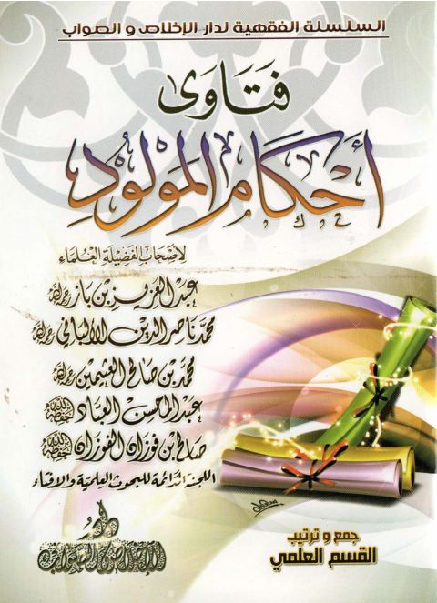
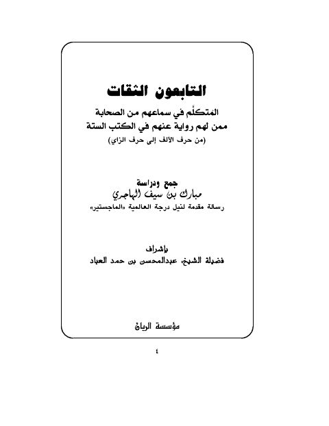

فتاوى أحكام المولود دار الإخلاص والصواب فتاوى أحكام المولود دار الإخلاص والصواب ابن باز • الألباني • العثيمين • عبد المحسن العباد • الفوزان
التابعون الثقات المتكلم في سماعهم من الصحابة ممن لهم رواية عنهم في الكتب الستة من الألف إلى الزاي- الريان التابعون الثقات المتكلم في سماعهم من الصحابة ممن لهم رواية عنهم في الكتب الستة من الألف إلى الزاي- الريان مبارك سيف الهاجري